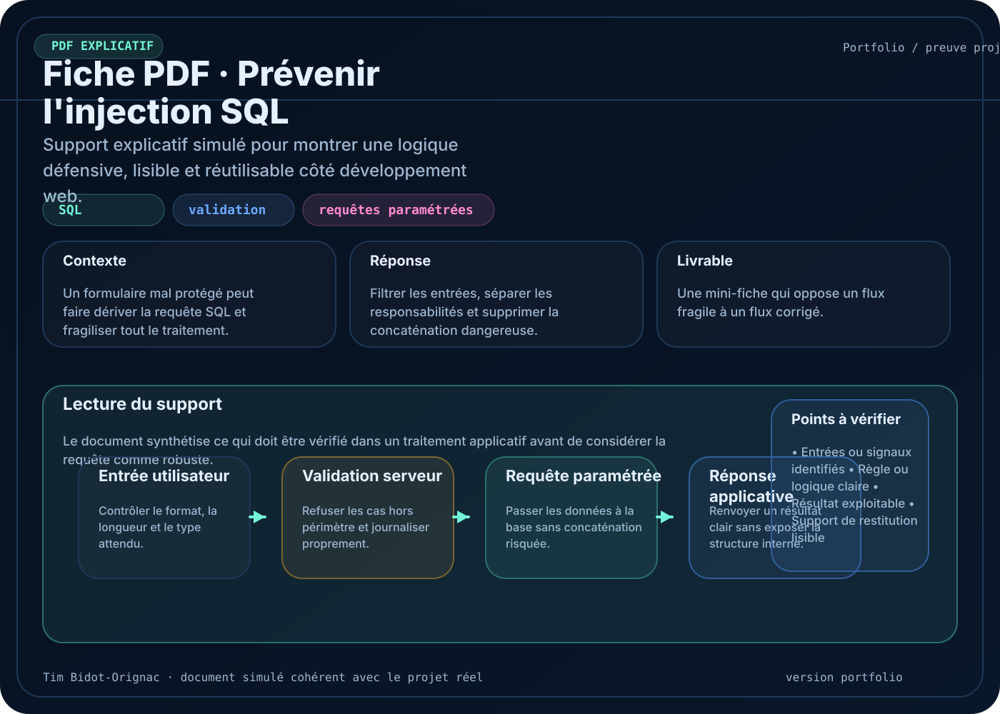
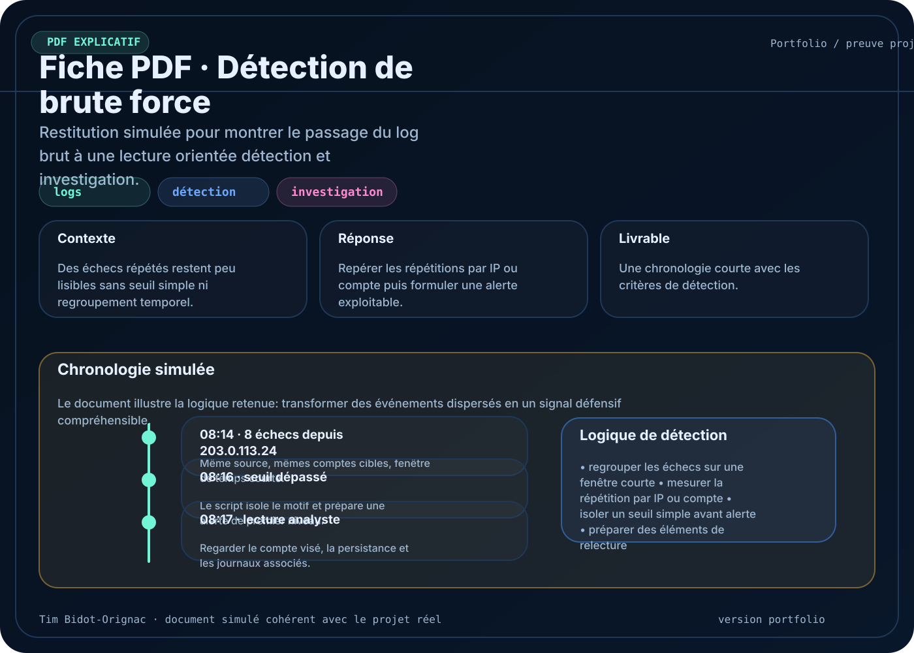
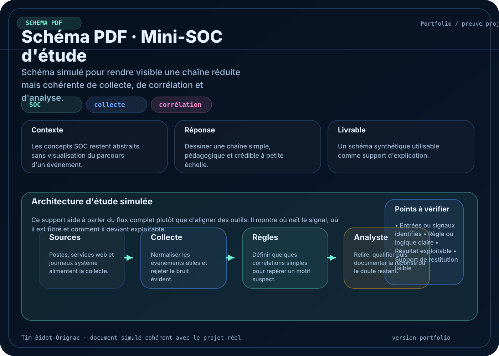
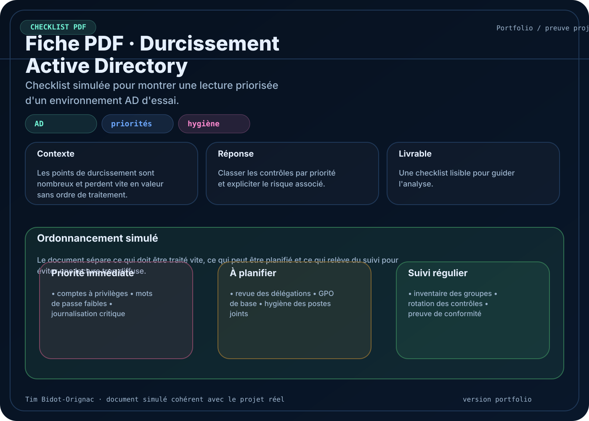
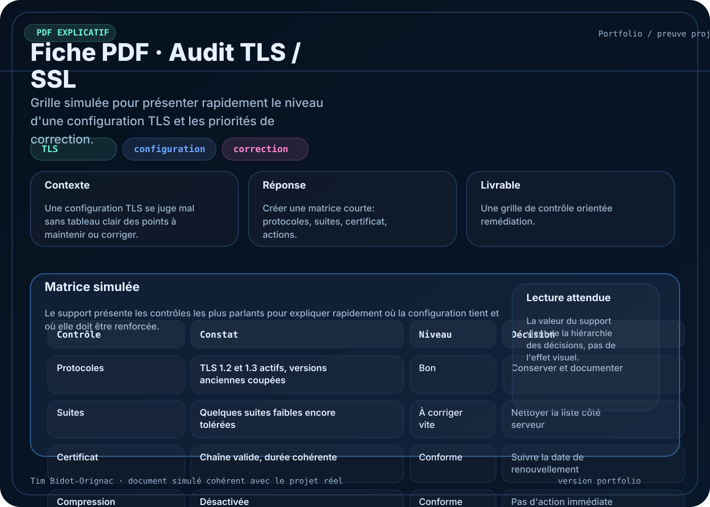
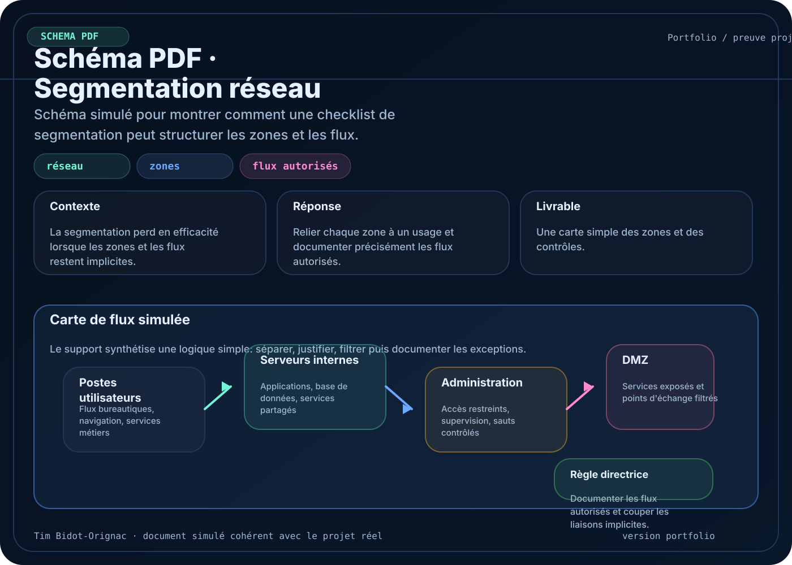
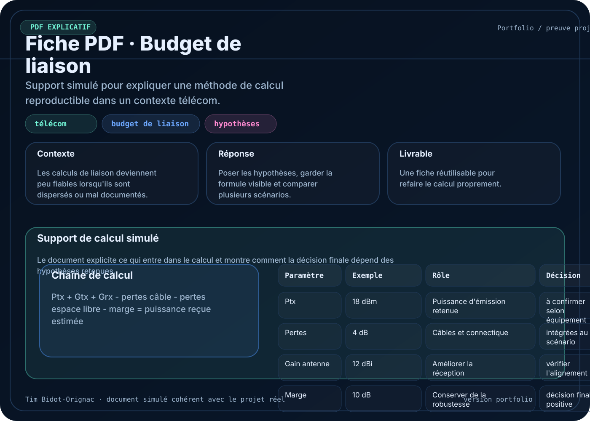

La démarche
Chaque projet est présenté avec un contexte, une logique de travail et un support de restitution pour rendre la lecture immédiate.
Travaux personnels
Cette page regroupe des projets menés en autonomie pour approfondir la sécurité, l’analyse, l’automatisation et la documentation technique. Chaque fiche explique le contexte, le problème traité, l’approche choisie, les outils utilisés et le résultat obtenu.
Les schémas, captures et PDF servent ici de preuves complémentaires. L’objectif n’est pas seulement de montrer une idée, mais de rendre le travail lisible et vérifiable.
Chaque projet est présenté avec un contexte, une logique de travail et un support de restitution pour rendre la lecture immédiate.
Les thèmes reviennent souvent autour de la sécurité web, de la lecture de logs, du réseau et de l’automatisation de contrôles simples.
Les PDF, schémas et visuels associés évitent les descriptions vagues et montrent la manière dont le travail a été structuré.

Sécurité applicative
Une fiche de travail centrée sur les causes racines d’une SQLi, les points de contrôle côté code et les mesures de prévention à mettre en place.

Sécurité web
Un contrôle automatisé des en-têtes de sécurité pour repérer rapidement les oublis fréquents et produire une lecture plus exploitable qu’un simple relevé brut.

Détection et journalisation
Un travail d’analyse de journaux pour repérer une séquence de tentatives répétées, remonter les indices utiles et produire une chronologie simple.

Surveillance
Une petite chaîne de détection pensée pour comprendre comment collecter un événement, le relire, le qualifier puis le restituer proprement.

Systèmes et annuaire
Une checklist priorisée pour passer d’un environnement permissif à une base plus propre, avec des contrôles orientés hygiène, comptes et politiques.

Lecture de résultats
Une façon de relire un export de scan sans se perdre dans la masse, en triant les résultats et en mettant en avant ce qui doit être traité en premier.

Sécurité des services
Un travail de vérification des versions, des suites de chiffrement et des paramètres sensibles pour obtenir un diagnostic synthétique sur un service exposé.

Architecture réseau
Une grille de contrôle pour valider la séparation des zones, les flux autorisés et les points d’administration avant de considérer une architecture comme propre.

Télécommunications
Un outil simple pour vérifier la faisabilité d’un lien et poser proprement les hypothèses avant de discuter d’un résultat technique.

Révision et compréhension
Des notes structurées pour clarifier les mécanismes d’injection SQL, leurs impacts et les mesures défensives à retenir dans un cadre d’apprentissage.